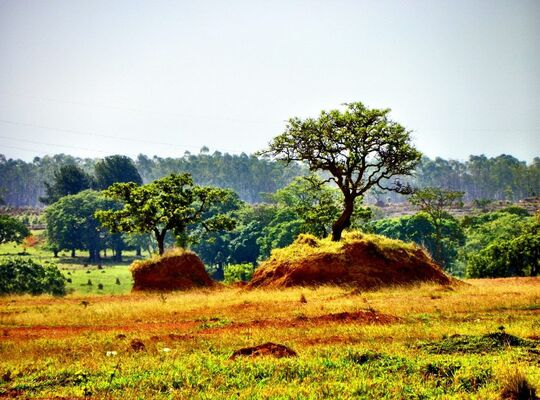
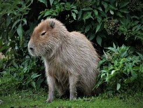
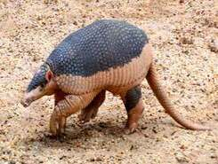
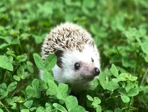
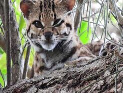
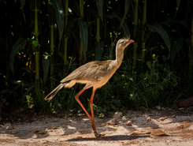
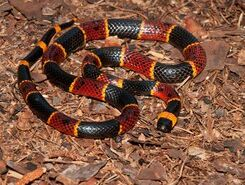
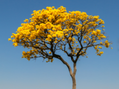
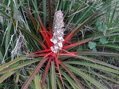
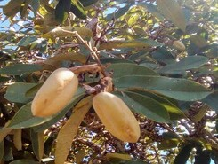

Características

O bioma do Cerrado possui áreas com clima tropical sazonal, com invernos secos e verões chuvosos, com curtos períodos de seca. No brasil, o bioma ocupa 22% do território nacional e está localizado em quinze estados brasileiros.
Em geral bastante plano, formado principalmente por planícies. O Cerrado é reconhecido como a savana com maior biodiversidade do mundo, com vegetação bastante diversificada.
Lista de estados
Goiás, Mato Grosso, Mato Grosso do Sul, Tocantins, Minas Gerais, Bahia, Maranhão, Piauí, Rondônia, Paraná, São Paulo e Distrito Federa. Parte de Amapá, Amazonas e Roraima.
Fauna
(Exemplos)
Capivara |
Tatu-Canastra |
Porco-Espinho |
|  |  |
 |
| Maior roedor do mundo, alcançando 1,2 metros de comprimento e 60 centímetros de altura. Possuem pelagem densa e com cor marrom escuro. | Maior espécie viva de tatu, medindo mais de 1 metro de comprimento. São solitários e passam o dia em tocas, podendo se enterrar para escapar de predadores. | Mamífero com corpo recoberto de "espinhos" pontiagudos, os quais são utilizados para sua defesa. Os espinhos não possuem toxinas, como muitos pensam, mas deixa os ferimentos expostos a bactérias. |
Gato-Maracajá |
Seriema |
Morceguinho-do-Cerrado |
|  |  |
 |
| Também chamado de gato-da-mata, um pequeno felino que vive em florestas. Possuem um corpo bem semelhante aos de uma onça-pintada, mas bem menores. | Aves territoriais com pernas e pescoços longos. Possuem alimentação semelhante à de um gavião, comendo insetos e pequenos envertebrados, assim como répteis e anfíbios. | Pequena espécie de morcegos que se alimenta de insetos, frutos e outras plantas. É uma espécie própria do cerrado e atualmente é considerada ameaçada. |
Cobra-Coral |
Tucunaré |
|  |  |
| Também conhecida como Coral Verdadeira, uma serpente com hábitos fossoriais, isso é, que vivem escondidas de baixo de troncos e folhagem. | Peixes escamosos de médio porte, encontrados principalmente em lagos, rios e estuários, preferindo águas lentas ou paradas. Tucunarés atraem pescadores pela sua dificudade de serem capturados. |
Flora
(Características)
Com uma grande variedade, a vegetação no cerrado pode ser separada em um total de onze tipos. Algumas de suas áreas possuem mais árvores de grande porte e arbustos, enquanto outras apresentam mais ervas e subarbustos, plantas semelhantes a arbustos mas geralmente inferior a 1m.
Ipê |
Gravatá |
Pau-Terra |
|  |  |
 |